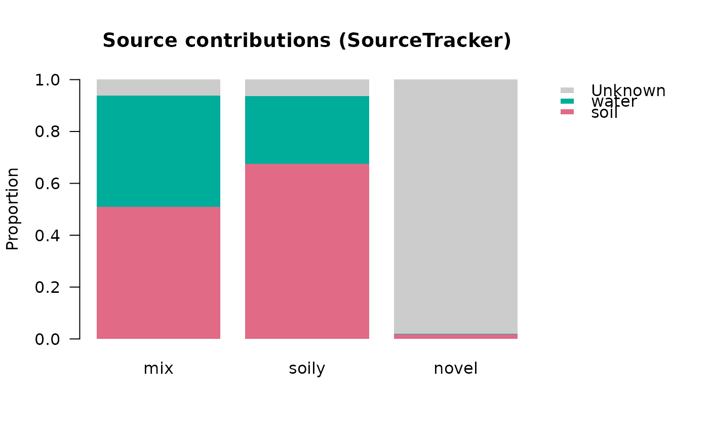

Estimates what share of each sink sample's community came from each of several source environments, and from an unknown source, with SourceTracker's Bayesian Gibbs sampler (Knights et al. 2011), as SourceTracker2 implements it.
Usage
sourcetracker(
counts,
sources,
data = NULL,
margin = 1L,
depth = 1000L,
sink_depth = depth,
alpha1 = 0.001,
alpha2 = 0.1,
beta = 10,
n_restarts = 10L,
n_draws = 1L,
n_burnin = 100L,
thin = 1L,
loo = FALSE,
features = FALSE,
seed = 0L,
cpus = n_cpus()
)Arguments
- counts
A numeric matrix of whole-number counts (samples \(\times\) features), sources and sinks together, or any table type listed under "Input Types".
- sources
Each sample's source environment: a vector with one value per sample (matched by name when both are named), or the name of a column of
data.NAmarks a sink. Samples with the same label are pooled into one environment. To leave a sample out altogether, remove it fromcounts.- data
Optional sample metadata: a data frame with one row per sample (matched to the samples by row name when both have names), for
sourcesto name a column of.- margin
The margin containing samples.
1if samples are rows,2if samples are columns. Ignored whencountsis a special object class (e.g.phyloseq). Default:1- depth
The rarefaction depth of the pooled source environments, or
NULLnot to rarefy them. Default:1000.- sink_depth
The rarefaction depth of the sinks, or
NULLnot to rarefy them. Default:depth.- alpha1
The prior count added to every feature of every known source environment. Higher values trust the sources less and smooth their feature distributions. Default:
0.001.- alpha2
The prior count of every feature in the unknown source, as a fraction of the sink's depth. Higher values make the unknown source smoother. Must be positive. Default:
0.1.- beta
The prior count of the sink's reads in each source (the unknown included). Must be positive. Default:
10.- n_restarts
The number of independent Gibbs chains for each sink. Default:
10.- n_draws
The number of draws taken from each chain. Default:
1.- n_burnin
The number of passes over the sink's reads before the first draw. SourceTracker calls this
burnin. Default:100.- thin
The number of passes between draws. SourceTracker calls this
delay. Default:1, as in SourceTracker2 (SourceTracker 1's default is 10).- loo
Leave one out: instead of the sinks, track each pooled and rarefied source environment in turn against the others. Samples with
NAinsourcesare then ignored. Default:FALSE.- features
Also return each sink's reads by source and feature (attribute
features). Default:FALSE.- seed
Random seed for the rarefaction and the Gibbs chains: any integer. The same
seedgives the same result for anycpus. Default:0.- cpus
How many parallel processing threads should be used. The default,
n_cpus(), will use all logical CPU cores.
Value
A numeric matrix of class ecodive_source: one row per sink, and
one column per source environment (in the order of levels(sources)
for a factor, otherwise sorted by name in the C locale), then
"Unknown". Each row holds the sink's mean source proportions, and
sums to 1. With loo = TRUE, there is one row per environment, and 0
in each environment's own column.
Attributes:
sdThe standard deviations of the proportions over the draws, in the same shape. With the defaults they rest on only 10 draws (
n_restarts\(\times\)n_draws).n_drawsThe number of draws in total for each sink:
n_restarts * n_draws.featuresWith
features = TRUE: a list with one matrix per sink, of the sink's reads assigned to each source (rows, as the columns of the result) from each feature (columns), averaged over the draws. Each matrix sums to the sink's (rarefied) depth.method"sourcetracker".
It is still a matrix: x[, "Unknown"], rowSums(x) and
barplot(t(x)) work as for any other. plot()
draws the usual stacked bar chart.
Details
Sinks, sources and the unknown source. A sink is a community whose origins are in question (say an infant's gut, or a hospital surface); the sources are samples of the environments it may have come from (the mother's skin, vagina and stool; patients' skin; tap water). Each environment's samples are pooled, and each read of the sink is assigned, by the Gibbs sampler, to one of the environments or to an unknown source, whose composition is learned from the reads assigned to it. The proportions are the shares of the sink's reads assigned to each, averaged over the draws.
The model assumes that a sink is a mixture of its sources (and the unknown). It is not when communities change after they arrive (growth, competition, a different habitat), which can make sources look more or less important than they were (Shenhav et al. 2019). In their simulations, SourceTracker also tended to underestimate the unknown source.
The pipeline, as SourceTracker2's:
Each environment's samples are pooled by their mean, truncated to whole numbers (as SourceTracker2 does, although its README says "rounded").
The pooled environments are rarefied to
depth, and the sinks tosink_depth, without replacement. A source environment or sink with fewer reads than its depth is an error. Withloo = TRUE, the held-out environment is already rarefied, andsink_depthis unused.For each sink,
n_restartschains each start from a uniform random assignment of the reads, runn_burnin + (n_draws - 1) * thin + 1passes over the reads (each in a new random order), and take a draw (the reads' current assignment) after passn_burnin + 1and everythinpasses after that.
A read of feature \(t\) is assigned to known source \(v\) with
weight \((m_{vt} + \alpha_1)/(m_v + \tau\alpha_1)\,(c_v + \beta)\),
and to the unknown source with weight \((u_t + \alpha_2 n)/(U +
\alpha_2 n\tau)\,(c_U + \beta)\), where \(m\) are the rarefied source
counts, \(c\) the sink's reads currently assigned to each source,
\(u\) (sum \(U\)) those assigned to the unknown by feature, \(n\)
the sink's depth, and \(\tau\) the number of features: every column
of counts, including features that are zero everywhere, as in
SourceTracker2. Removing empty features therefore changes the result a
little.
Rarefaction depth matters. Rarefying the sources to depth sets how
much evidence each environment's feature distribution carries; rarefying
the sinks to sink_depth sets how many reads are assigned, and so how
smooth the unknown source is (alpha2 is per read of the sink). Results
at different depths aren't directly comparable, and a deeper depth
makes rare features of the sources count.
Reproducibility. Rarefying sink \(i\) uses the same random stream
as rarefy() would for sample \(i\) of counts, so that each sink
is rarefied exactly as rarefy(counts, sink_depth, seed = seed)
rarefies it. Each chain has its own stream, chosen by the sink's
position in counts and the restart. The result is therefore the same
for any cpus, and a sink's result doesn't change when sinks after it
in counts are added or removed.
The stacked bar chart. plot(x) draws one bar per sink, divided by
source, with the unknown in grey; barplot(t(x), legend.text = TRUE)
draws much the same with base graphics alone.
Differences from SourceTracker2
Each sink and restart has its own random stream of
seed, so results are reproducible and identical for anycpus. SourceTracker2's--jobsworkers either share one random state or start unseeded, so its results depend onjobsand the operating system. Its random numbers (NumPy's, and scikit-bio's subsampling) aren't reproduced, so results agree with SourceTracker2's in distribution, not draw for draw.One
sourcesvector, withNAfor sinks, replaces SourceTracker2'sSourceSinkandEnvmetadata columns.sdis the standard deviation of the per-draw proportions. SourceTracker2 divides each draw's counts by the total over all draws before taking the standard deviation, so its reported values are these divided by the number of draws.featuresholds the mean over the draws. SourceTracker2's feature tables (its docstring says averages) are sums over the draws: multiply byattr(x, "n_draws")to get them.Counts must be whole numbers; SourceTracker2 truncates others.
loo = TRUEworks. SourceTracker2's leave-one-out (2.0.1-dev, with current pandas) fails: it keeps the held-out environment among the sources. ecodive does what it intends, holding it out.
Differences from SourceTracker 1
The original R script's delay (here thin) defaults to 10, not 1.
Its leave-one-out holds out individual source samples; SourceTracker2's
(and so loo = TRUE here) holds out whole pooled environments.
SourceTracker 1's tune.st() (choosing alpha1 and alpha2 by
leave-one-out) isn't provided.
Same names in other packages
SourceTracker 1's R script defines sourcetracker(), the same method
(it isn't a package on CRAN). FEAST (Shenhav et al. 2019; package
'FEAST' on GitHub) is the other common source-tracking method.
Input Types
The counts parameter is designed to accept a simple numeric matrix, but
seamlessly supports objects from the following biological data packages:
phyloseqrbiomSummarizedExperimentTreeSummarizedExperiment
For large datasets, standard matrix operations may be slow. See
vignette('performance') for details on using optimized formats
(e.g. sparse matrices) and parallel processing.
References
Knights, D., Kuczynski, J., Charlson, E. S., Zaneveld, J., Mozer, M. C., Collman, R. G., Bushman, F. D., Knight, R., & Kelley, S. T. (2011). Bayesian community-wide culture-independent microbial source tracking. Nature Methods, 8, 761-763. doi:10.1038/nmeth.1650
Shenhav, L., Thompson, M., Joseph, T. A., Briscoe, L., Furman, O., Bogumil, D., Mizrahi, I., Pe'er, I., & Halperin, E. (2019). FEAST: fast expectation-maximization for microbial source tracking. Nature Methods, 16, 627-632. doi:10.1038/s41592-019-0431-x
Examples
# Two source environments, three samples of each, and three sinks:
# a mix of soil and water, mostly soil, and mostly something else.
soil <- c(300, 200, 100, 50, 0, 0, 0, 0)
water <- c(0, 0, 50, 100, 200, 300, 0, 0)
other <- c(0, 0, 0, 0, 0, 0, 300, 350)
counts <- rbind(
soil1 = soil + c(10, 0, 5, 0, 0, 0, 0, 0),
soil2 = soil + c(0, 20, 0, 5, 0, 0, 0, 0),
soil3 = soil,
water1 = water + c(0, 0, 0, 0, 10, 0, 0, 0),
water2 = water + c(0, 0, 0, 10, 0, 20, 0, 0),
water3 = water,
mix = soil + water,
soily = 3 * soil + water,
novel = soil + 5 * other )
sources <- c(rep('soil', 3), rep('water', 3), NA, NA, NA)
st <- sourcetracker(counts, sources, depth = 500, n_burnin = 20)
st
#> # A matrix: 3 sinks × 3 sources
#> # Source contributions (SourceTracker)
#> # Mean of 10 draws
#> soil water Unknown
#> mix 0.509 0.429 0.062
#> soily 0.675 0.262 0.063
#> novel 0.0184 0.0012 0.98
#> # Attributes: sd, n_draws, method
plot(st)

# Leave one out: how distinct are the environments?
sourcetracker(counts, sources, depth = 500, n_burnin = 20, loo = TRUE)
#> # A matrix: 2 sinks × 3 sources
#> # Source contributions (SourceTracker)
#> # Mean of 10 draws
#> soil water Unknown
#> soil 0 0.0062 0.994
#> water 0.0054 0 0.995
#> # Attributes: sd, n_draws, method